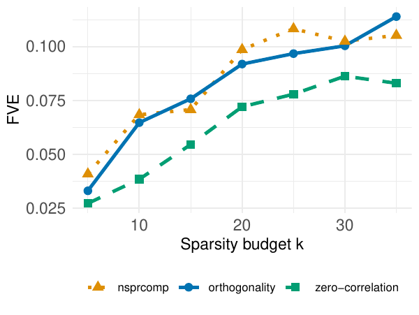
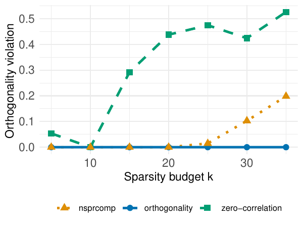
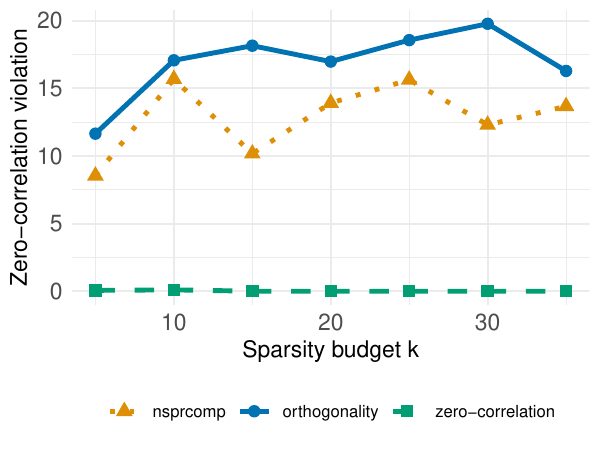
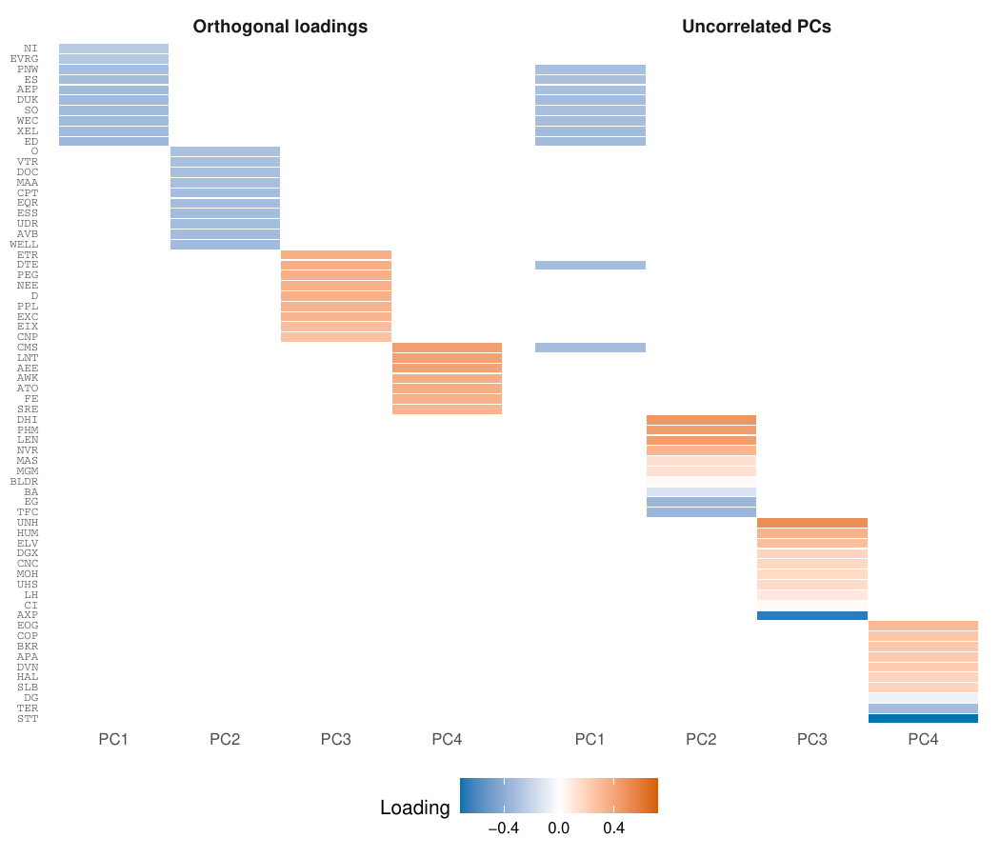

Case study: sparse factors in S&P 500 returns
Source:vignettes/case-study-snp500.Rmd
case-study-snp500.RmdThis vignette works through a complete, non-trivial application of
msPCA to financial return data. It illustrates the
practical difference between the two notions of non-redundancy that the
package supports — orthogonal loadings and uncorrelated principal
components — and shows that the choice materially changes the factors
you recover.
Every msPCA result below reproduces from data shipped
with the package: no downloads, no accounts, no external files. The
fitting chunks are marked eval = FALSE only to keep the
vignette quick to build — the full sparsity grid takes several minutes —
but each runs as written once you have called data(snp500).
The one exception is the nsprcomp reference curve, which
needs a data matrix rather than a correlation matrix; that is flagged
where it arises.
The data
The dataset snp500 is the market-deflated correlation
matrix of daily log-returns for p = 423 S&P 500
constituents with complete price histories from January 2010 to December
2019 (n = 2,515 trading days).
library("msPCA")
data(snp500)
dim(snp500)
#> [1] 423 423
round(snp500[1:4, 1:4], 3)
#> A AAPL ABT ACGL
#> A 0.433 0.004 0.031 -0.027
#> AAPL 0.004 0.716 0.012 -0.048
#> ABT 0.031 0.012 0.614 0.010
#> ACGL -0.027 -0.048 0.010 0.631Two points about how it was constructed. First, S&P 500 returns are dominated by a “market factor” that loads positively on virtually every stock and absorbs a disproportionate share of total variance. To expose cross-sectional structure — sector and style effects — rather than market-wide movements, the leading eigenvector of the empirical correlation matrix has been projected out, with . The matrix is therefore rank :
ev <- eigen(snp500, symmetric = TRUE, only.values = TRUE)$values
sum(ev > 1e-8) # 422: the market direction has been removed
#> [1] 422Second, only the deflated correlation matrix is distributed, not the
underlying returns — it is the only object this analysis needs. The raw
prices come from the S&P
500 daily update dataset on Kaggle, released under CC0 1.0. Because
that dataset is refreshed daily, snp500 is the archival
record for the fixed window above. The full derivation — adjusted closes
to log returns to deflated correlations — is scripted in
data-raw/snp500.R in the package repository, and
?snp500 documents the format.
Sparse factor extraction
We extract r = 4 sparse factors, each allowed to load on
at most k stocks, varying k from 5 to 35 in
steps of 5 and running the analysis under both constraint types. The
code below produces the results for the orthogonality constraint
(feasibilityConstraintType = 0); setting
feasibilityConstraintType = 1 gives the zero pairwise
correlation results.
ks_grid <- seq(5, 35, by = 5)
results <- lapply(ks_grid, function(k) {
set.seed(42)
res <- mspca(snp500, r = 4, ks = rep(k, 4), verbose = FALSE,
maxIter = 100, feasibilityConstraintType = 0)
data.frame(
k = k,
fve = fraction_variance_explained(snp500, res$x_best),
orth = feasibility_violation_off(snp500, res$x_best, 0),
pwcorr = feasibility_violation_off(snp500, res$x_best, 1)
)
})
results_df <- do.call(rbind, results)We also run nsprcomp::nsprcomp() (Sigg 2019) at the same budgets as a reference.
Note that nsprcomp() requires a data matrix rather than a
covariance matrix, so it needs the deflated returns
XR <- X %*% P rather than snp500. That
matrix is 2,515 x 423 and is not shipped with the package;
data-raw/snp500.R documents how to rebuild it from the raw
prices. The pre-computed comparison is included instead, so the numbers
below can be inspected and re-plotted without a rerun:
res_grid <- read.csv(system.file("vignette-data", "snp_varyingk_results.csv",
package = "msPCA"))
ks <- sort(unique(res_grid$k))
by_constraint <- function(cn) {
sub <- res_grid[res_grid$constraint == cn, ]
sub[match(ks, sub$k), c("fve", "orth_violation")]
}
tab <- cbind(k = ks,
by_constraint("orthogonality"),
by_constraint("zero-correlation"),
by_constraint("nsprcomp"))
knitr::kable(
tab, digits = 4, row.names = FALSE,
col.names = c("k", "FVE (orth)", "viol (orth)", "FVE (zero-corr)",
"viol (zero-corr)", "FVE (nsprcomp)", "viol (nsprcomp)"),
caption = "FVE and orthogonality violation across the sparsity grid."
)| k | FVE (orth) | viol (orth) | FVE (zero-corr) | viol (zero-corr) | FVE (nsprcomp) | viol (nsprcomp) |
|---|---|---|---|---|---|---|
| 5 | 0.0330 | 2e-04 | 0.0272 | 0.0537 | 0.0409 | 0.0000 |
| 10 | 0.0647 | 1e-04 | 0.0384 | 0.0000 | 0.0684 | 0.0000 |
| 15 | 0.0758 | 1e-04 | 0.0545 | 0.2917 | 0.0707 | 0.0000 |
| 20 | 0.0919 | 1e-04 | 0.0721 | 0.4378 | 0.0986 | 0.0000 |
| 25 | 0.0967 | 1e-04 | 0.0779 | 0.4744 | 0.1083 | 0.0148 |
| 30 | 0.1004 | 1e-04 | 0.0863 | 0.4241 | 0.1025 | 0.1028 |
| 35 | 0.1139 | 1e-04 | 0.0830 | 0.5259 | 0.1052 | 0.1982 |
Comparing the two constraint types
The figures below report the fraction of variance explained (FVE),
the orthogonality violation, and the uncorrelatedness violation as a
function of k, for msPCA under each constraint
type, against nsprcomp::nsprcomp() at the same sparsity
budgets.



Left: fraction of variance explained vs. sparsity budget k.
Center: orthogonality violation vs. k. Right: uncorrelatedness violation
vs. k. Results are shown for msPCA with orthogonality
constraints (blue, solid), msPCA with zero pairwise
correlation constraints (green, dashed), and
nsprcomp::nsprcomp() (orange, dotted). All methods use r =
4 components.
On this dataset, nsprcomp::nsprcomp() returns orthogonal
loading vectors for small-to-moderate sparsity budgets
(k <= 20), reflecting the effectiveness of the deflation
procedure when component supports are sufficiently disjoint. As
k grows, however, the orthogonality violation increases,
reaching 0.20 at k = 35.
By contrast, msPCA with orthogonality constraints
maintains near-zero orthogonality violation across all values of
k — at most 1e-4, the default feasibility tolerance —
because the penalty on constraint violation is explicitly tightened
throughout the algorithm. At the smallest budget (k = 5)
the violation is 2.2e-4, marginally above the default tolerance. In
terms of FVE, nsprcomp::nsprcomp() achieves comparable or
slightly higher values for most sparsity budgets, with
msPCA ahead only at the largest budget
(k = 35).
Neither nsprcomp::nsprcomp() nor
orthogonality-constrained msPCA yields uncorrelated PCs
here. To obtain uncorrelated PCs we run msPCA with pairwise
correlation constraints instead, which yields PCs with near-zero
pairwise correlation that are not mutually orthogonal. On this dataset,
requiring zero pairwise correlation rather than orthogonality is
possible only at the expense of a substantially lower FVE.
The two constraints correspond to different feasibility definitions
and lead to meaningfully different factor compositions.
msPCA lets the user choose and enforce whichever is
relevant to their use case, with predictable behaviour across the full
range of sparsity levels.
Interpreting the sparse components
Fixing k = 10, each factor loads on 10 stocks out of
423, making it possible to associate each component with an economic
theme. Sector labels below follow the Global Industry Classification
Standard [GICS; MSCI and S&P Dow Jones
Indices (2023)].
set.seed(42)
res_orth <- mspca(snp500, r = 4, ks = rep(10, 4), verbose = FALSE,
maxIter = 100, feasibilityConstraintType = 0)
set.seed(42)
res_corr <- mspca(snp500, r = 4, ks = rep(10, 4), verbose = FALSE,
maxIter = 100, feasibilityConstraintType = 1)
print(res_orth, snp500)
print(res_corr, snp500)
Loadings of the 4 PCs (sparsity k = 10) returned by
msPCA with orthogonality (left) or zero-correlation (right)
constraints.
Under orthogonality constraints
The four PCs concentrate entirely within the utility and REIT sectors, with no cross-sector loadings:
- PC1 loads on regulated electric utilities (AEP, DUK, ED, ES, EVRG, NI, PNW, SO, WEC, XEL).
- PC2 consolidates the REIT segment into a single component spanning residential apartments (AVB, CPT, EQR, ESS, MAA, UDR), healthcare REITs (DOC, WELL, VTR), and net-lease (O).
- PC3 captures a second, non-overlapping utility cluster (CNP, D, DTE, EIX, ETR, EXC, NEE, PEG, PPL).
- PC4 identifies a third utility subgroup (AEE, ATO, AWK, CMS, FE, LNT, SRE).
The orthogonality constraint therefore fragments the market into three disjoint utility clusters and one diversified REIT basket, with each PC loading exclusively on one sector.
Under zero-correlation constraints
The components are more sector-diverse, each capturing a cross-sector contrast:
- PC1 consolidates the entire utility sector into a single broad component (AEP, CMS, DTE, DUK, ED, ES, PNW, SO, WEC, XEL), merging stocks that the orthogonality constraint split across three separate PCs.
- PC2 contrasts homebuilders and residential construction (DHI, LEN, NVR, PHM, positive; MAS and MGM in the same direction) against financials (TFC, EG) and industrials (BA) with negative loadings, capturing the interest-rate sensitivity of the housing sector.
- PC3 identifies a managed-care and health-insurance theme: large health insurers and managed-care organizations (UNH, HUM, ELV, MOH, CNC, UHS) load positively alongside diagnostics providers (DGX, LH), while American Express (AXP) carries a large negative loading, reflecting the contrast between healthcare spending and consumer credit.
- PC4 loads positively on oil and gas exploration (APA, COP, DVN, EOG) and oilfield services (BKR, HAL, SLB), against financial custodians (STT) and semiconductor-test equipment (TER) negatively, capturing the energy sector’s divergence from interest-rate sensitive financials and technology.
Takeaway
Orthogonality and zero pairwise correlation are not interchangeable. On strongly correlated data they recover qualitatively different factor structures: the former partitions the market into disjoint single-sector blocks, the latter produces broader cross-sector contrasts. Choose orthogonality when the loading vectors will serve as a projection basis, and zero pairwise correlation when the goal is statistically decorrelated scores for downstream regression or classification.